Breakthroughs in Response and Transport#
How a lattice answers a probe: Berry-curvature responses (the anomalous,
spin, Nernst and thermal Hall effects and orbital magnetization), the
Landauer-Büttiker picture of conduction between leads and the Green’s
function and scattering-matrix methods that compute it, and linear and
nonlinear optical response. It traces the ideas behind tbkit.kspace’s
Kubo formulas, tbkit.transport and tbkit.optics.
1954-2004 – The Anomalous Hall Effect: from the Anomalous Velocity to the Berry Phase#
Ferromagnets show a Hall voltage far larger than their magnetic field explains. R. Karplus and J. Luttinger traced it in 1954 to the band structure itself: with spin-orbit coupling, an electron driven by an electric field acquires an anomalous velocity perpendicular to it, a property of the perfect crystal rather than of scattering. The idea was contested for decades (skew and side-jump scattering by impurities were put forward instead), until it was recognized as a Berry-phase effect. T. Jungwirth, Q. Niu and A. MacDonald (2002) computed the anomalous Hall conductivity of ferromagnetic semiconductors from the Berry curvature of the occupied bands, and F. D. M. Haldane (2004) showed that its non-quantized part is a property of the Fermi surface. The semiclassical velocity of a band is \(\dot{\mathbf{r}} = \partial_{\mathbf{k}}E_n - \dot{\mathbf{k}}\times\boldsymbol\Omega_n\), and the intrinsic conductivity at any Fermi level is the curvature of the occupied states,
the TKNN Chern number (1982, below) when \(E_F\) lies in a gap, and a continuous, non-quantized function of \(E_F\) inside the bands.
Implementation: tbkit.kspace.KSpace.hall_conductivity() evaluates
the Kubo formula in the form that stays finite where bands touch, with
\(\partial H/\partial\mathbf{k}\) built analytically from the
hoppings, at any Fermi level and temperature, in 2D and 3D, with the
adaptive mesh refinement of Wang, Yates, Souza and Vanderbilt (2006).
tbkit.kpm.hall_conductivity() computes the same quantity in real
space, for disordered samples of tens of thousands of sites, from the
Chebyshev expansion of the Kubo-Bastin formula (Garcia, Covaci and
Rappoport 2015), with the velocities of
finite_velocity() on a torus.
References: R. Karplus and J. M. Luttinger, “Hall Effect in Ferromagnetics,” Phys. Rev. 95, 1154-1160 (1954); T. Jungwirth, Q. Niu, and A. H. MacDonald, “Anomalous Hall Effect in Ferromagnetic Semiconductors,” Phys. Rev. Lett. 88, 207208 (2002); F. D. M. Haldane, “Berry Curvature on the Fermi Surface: Anomalous Hall Effect as a Topological Fermi-Liquid Property,” Phys. Rev. Lett. 93, 206602 (2004); X. Wang, J. R. Yates, I. Souza, and D. Vanderbilt, “Ab initio calculation of the anomalous Hall conductivity by Wannier interpolation,” Phys. Rev. B 74, 195118 (2006); J. H. Garcia, L. Covaci, and T. G. Rappoport, “Real-Space Calculation of the Conductivity Tensor for Disordered Topological Matter,” Phys. Rev. Lett. 114, 116602 (2015); N. Nagaosa, J. Sinova, S. Onoda, A. H. MacDonald, and N. P. Ong, “Anomalous Hall effect,” Rev. Mod. Phys. 82, 1539-1592 (2010) (a review).
Examples: examples/hall_effects/plot_anomalous_hall_effect.py
confirms that \(\sigma_{xy}(E_F)\) of the Haldane model equals the
Chern number throughout the gap, in both phases, and takes non-quantized
values in the bands – nonzero even in the trivial phase.
examples/hall_effects/plot_anomalous_hall_disorder.py finds the same
plateau with the kernel polynomial method on a 20,000-orbital torus, and
follows it as onsite disorder fills the gap with localized states, until
strong disorder destroys it.
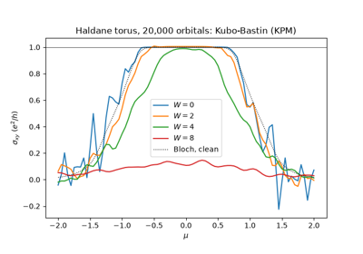
The Anomalous Hall Effect in Real Space: a Disordered Chern Insulator
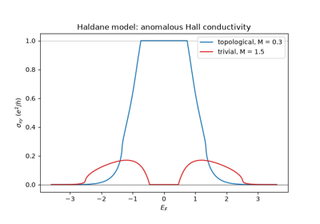
The Anomalous Hall Effect: from the Anomalous Velocity to the Berry Phase
1957/1988 – The Landauer Formula and Quantized Conductance#
R. Landauer (1957), then M. Buttiker (1986), recast electrical conductance as a scattering problem: a phase-coherent conductor between two reservoirs has the conductance \(G = \frac{e^2}{h}T(E_F)\), with \(T\) the transmission probability summed over the transverse modes of the leads,
in the form of Caroli et al., with \(\Sigma_l\) the self-energy of lead \(l\). A perfect wire transmits each open mode fully, so its conductance counts them. In 1988 van Wees et al. and Wharam et al. saw exactly this in a quantum point contact: as a gate narrowed the constriction, the conductance fell in steps of \(2e^2/h\).
Implementation: tbkit.transport – semi-infinite leads from their
cell Hamiltonian (lead_from_kspace() cuts them
from any 1D model, e.g. a ribbon), surface Green’s functions by the
Lopez Sancho-Rubio decimation (surface_green()),
and Transport for the self-energies and the
transmission of a device (System.ham).
References: R. Landauer, “Spatial Variation of Currents and Fields Due to Localized Scatterers in Metallic Conduction,” IBM J. Res. Dev. 1, 223-231 (1957); M. Buttiker, “Four-Terminal Phase-Coherent Conductance,” Phys. Rev. Lett. 57, 1761-1764 (1986); B. J. van Wees et al., “Quantized Conductance of Point Contacts in a Two-Dimensional Electron Gas,” Phys. Rev. Lett. 60, 848-850 (1988); D. A. Wharam et al., J. Phys. C 21, L209 (1988).
Example: examples/transport/plot_landauer_conductance.py confirms
that a clean strip transmits exactly its number of open modes at every
energy, and that a saddle-shaped point contact shows conductance
plateaus at 1, 2, 3 and 4 \(e^2/h\) (per spin) as the gate closes it.
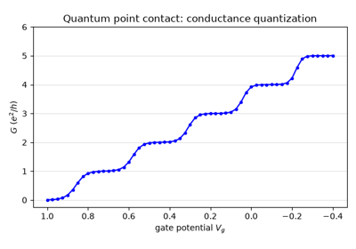
The Landauer Formula: Quantized Conductance of a Point Contact
1964/1982 – Andreev Reflection and the BTK Theory of NS Junctions#
Andreev (1964) found how a superconductor reflects an electron with an energy inside its gap: as a hole, retracing the electron’s path, while a Cooper pair enters the condensate. Blonder, Tinkham and Klapwijk (1982) turned this into the conductance of a normal-superconductor junction with a barrier of strength \(Z\),
with \(R_{he}\) the Andreev and \(R_{ee}\) the normal reflection. A clean interface doubles the conductance in the gap. A tunnel barrier suppresses it and leaves the superconductor’s density of states. The BTK formula is still how point-contact spectroscopy measures superconducting gaps.
Implementation: tbkit.transport.Transport.add_lead() with a
conservation_law (here the electron-hole charge \(\tau_z\) of the
normal lead) splits a lead’s modes into blocks, and
smatrix() resolves them:
SMatrix.transmission((0, 0), (0, 1)) is the Andreev reflection.
References: A. F. Andreev, “The thermal conductivity of the intermediate state in superconductors,” Sov. Phys. JETP 19, 1228-1231 (1964); G. E. Blonder, M. Tinkham and T. M. Klapwijk, “Transition from metallic to tunneling regimes in superconducting microconstrictions: Excess current, charge imbalance, and supercurrent conversion,” Phys. Rev. B 25, 4515-4532 (1982).
Example: examples/superconductivity/plot_andreev_reflection.py
confirms that a clean NS interface Andreev-reflects more than 99.9% of
the electrons in the gap and doubles the conductance, and that the
S-matrix of a chain with a barrier reproduces the BTK conductance within
0.01 \(e^2/h\) at every energy, for \(Z = 0\), 0.5 and 1.5.
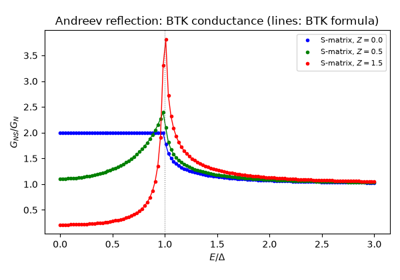
Andreev Reflection: the BTK Conductance of a Normal-Superconductor Junction
1981/2000 – The Shift Current and the Bulk Photovoltaic Effect#
Ferroelectrics lit uniformly produce a DC current with no junction (Glass, von der Linde and Negran 1974): the bulk photovoltaic effect of crystals without an inversion centre. Baltz and Kraut (1981) identified its main part as a shift current, and Sipe and Shkrebtii (2000) gave it its modern form: an electron excited from band \(n\) to band \(m\) moves by the shift vector \(R^{a,b}_{nm} = \partial_a\phi^b_{nm} - A^a_{nn} + A^a_{mm}\), a difference of Berry connections, and
The current is thus a property of the band geometry, not only of the absorption, and it depends on where the orbitals sit in the cell (Ibanez-Azpiroz, Tsirkin and Souza 2018).
Implementation: tbkit.optics.shift_current() (any component
\(\sigma^{abc}\) of a 2D KSpace) and
tbkit.optics.generalized_derivative() (the covariant derivatives
\(r^b_{nm;a}\) as a sum over states, with the exact second
derivatives of \(H\)).
References: A. M. Glass, D. von der Linde, and T. J. Negran, “High-voltage bulk photovoltaic effect and the photorefractive process in LiNbO3,” Appl. Phys. Lett. 25, 233 (1974); R. von Baltz and W. Kraut, “Theory of the bulk photovoltaic effect in pure crystals,” Phys. Rev. B 23, 5590 (1981); J. E. Sipe and A. I. Shkrebtii, “Second-order optical response in semiconductors,” Phys. Rev. B 61, 5337 (2000); J. Ibanez-Azpiroz, S. S. Tsirkin, and I. Souza, “Ab initio calculation of the shift photocurrent by Wannier interpolation,” Phys. Rev. B 97, 245143 (2018).
Example: examples/optics/plot_bulk_photovoltaic_shift_current.py
computes the shift current of graphene with a staggered potential
(boron nitride’s model) and confirms the \(C_{3v}\) selection rules
\(\sigma^{yyy} = -\sigma^{yxx} = -\sigma^{xxy}\),
\(\sigma^{xxx} = 0\), that nothing flows below the gap, that the
current reverses with the inversion image of the crystal
(\(m\to-m\)), and that it vanishes in centrosymmetric graphene.
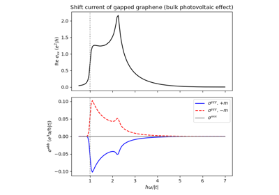
The Bulk Photovoltaic Effect: the Shift Current of Gapped Graphene
1981 – The Recursive Green’s Function Method#
The transmission of a disordered sample needs its Green’s function between the two leads, and a dense inversion costs \(N^3\) for \(N\) sites. Thouless and Kirkpatrick (1981), Lee and Fisher (1981) and MacKinnon and Kramer (1981, 1983) cut a quasi-1D sample into slices, each coupled to its neighbours only, and added them one at a time,
at a cost linear in the length. It made the conductance of long bars, and the localization lengths behind one-parameter scaling, computable, and it remains the workhorse of quantum-transport codes.
Implementation: tbkit.transport.RecursiveTransport (sparse
Hamiltonians, slices_from_positions(); the
transmission, its eigenvalues and the Fano factor).
References: D. J. Thouless and S. Kirkpatrick, “Conductivity of the disordered linear chain,” J. Phys. C 14, 235 (1981); P. A. Lee and D. S. Fisher, “Anderson Localization in Two Dimensions,” Phys. Rev. Lett. 47, 882 (1981); A. MacKinnon and B. Kramer, “One-Parameter Scaling of Localization Length and Conductance in Disordered Systems,” Phys. Rev. Lett. 47, 1546 (1981); A. MacKinnon, “The calculation of transport properties and density of states of disordered solids,” Z. Phys. B 59, 385 (1985); D. J. Thouless, in Ill-Condensed Matter, edited by R. Balian et al. (North-Holland, 1979).
Example: examples/transport/plot_recursive_green_function.py
confirms that the recursive and the dense transmissions agree, finds the
localization length of a disordered chain from \(\langle\ln T\rangle
= -2L/\xi\) within 10% of Thouless’s \(24(4t^2-E^2)/W^2\) (chains up
to 500 sites, 300 samples each), and computes the transmission of a
100 000-site wire whose dense matrix would not fit in memory.
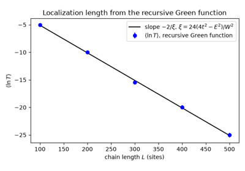
The Recursive Green’s Function: Localization Length of Long Disordered Wires
1981/1991 – The Scattering Matrix: the Fisher-Lee Relation and Mode Matching#
Fisher and Lee (1981) showed that the Landauer transmission is the squared norm of a block of the scattering matrix \(S\), the amplitudes of every outgoing mode of the leads for every incoming one, and they related \(S\) to the Green’s function of the sample. Ando (1991) computed \(S\) on a lattice by mode matching. The modes of a lead, \(\psi_n = \lambda^n\phi\), solve
and propagate when \(|\lambda| = 1\). In the sample, the wave function is an incoming mode plus outgoing and decaying ones, with coefficients fixed by the Schrodinger equation. Groth et al. (2014) wrote the problem as one sparse linear system, the basis of Kwant. The S-matrix resolves transport by mode, gives the scattering states inside the sample, and needs no broadening \(\eta\).
Implementation: tbkit.transport.lead_modes() (the generalized
eigenproblem of the transfer matrix, by the QZ algorithm, which allows a
singular \(v\)), tbkit.transport.Transport.smatrix() (one
sparse LU factorization per energy, returning a
SMatrix),
wave_function() and
ldos().
transmission() uses it by default.
References: D. S. Fisher and P. A. Lee, “Relation between conductivity and transmission matrix,” Phys. Rev. B 23, 6851-6854 (1981); T. Ando, “Quantum point contacts in magnetic fields,” Phys. Rev. B 44, 8017-8027 (1991); C. W. Groth, M. Wimmer, A. R. Akhmerov and X. Waintal, “Kwant: a software package for quantum transport,” New J. Phys. 16, 063065 (2014).
Example: examples/transport/plot_scattering_matrix.py finds one
incoming and one outgoing mode per open subband of a strip, on its
analytic bands. It confirms that the S-matrix of a strip with an
antidot is unitary to \(10^{-12}\) and that its transmission block
gives the Caroli transmission, and that each scattering state carries
its transmission through every cross-section. It also confirms that the
scattering states hold all of the local density of states, and that,
1e-9 below a band edge, the S-matrix keeps an impurity’s transmission
exact to \(10^{-6}\) where the Caroli formula with \(\eta = 10^{-9}\)
is off by 20%.
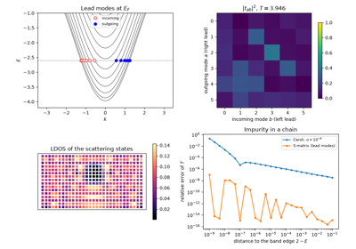
Mode Matching: the Scattering Matrix, Lead Modes and Scattering States
1986 – Thermoelectric Transport in the Landauer Picture#
Sivan and Imry (1986) extended the Landauer formula to heat. A temperature difference across a phase-coherent conductor drives a current, and a bias carries heat. In linear response, every coefficient is a moment of the transmission over the Fermi window,
For a transmission smooth on the scale \(k_BT\) they reduce to the Mott formula for the thermopower and the Wiedemann-Franz law \(\kappa = \frac{\pi^2}{3}TG\). A sharp resonance breaks both, which is the idea behind energy-filtering thermoelectrics (Mahan and Sofo 1996).
Implementation: tbkit.transport.Transport.thermoelectric() (and
conductance()) integrate the exact
transmission over the Fermi window; temperature in
conductance_matrix() and
four_terminal_resistance() does the same
for multi-terminal devices.
References: U. Sivan and Y. Imry, “Multichannel Landauer formula for thermoelectric transport with application to thermopower near the mobility edge,” Phys. Rev. B 33, 551-558 (1986); P. N. Butcher, “Thermal and electrical transport formalism for electronic microstructures with many terminals,” J. Phys.: Condens. Matter 2, 4869-4878 (1990); G. D. Mahan and J. O. Sofo, “The best thermoelectric,” Proc. Natl. Acad. Sci. USA 93, 7436-7439 (1996).
Example: examples/transport/plot_thermoelectric_transport.py
confirms that, through a resonant level at \(k_BT = \Gamma/50\), the
thermopower follows the Mott formula and changes sign at the resonance,
and the Lorenz ratio is \(\pi^2/3\), both within 2%. It also
confirms that the Lorenz ratio falls below 1% of \(\pi^2/3\) once
\(k_BT = 10\,\Gamma\).
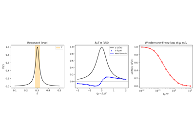
Thermoelectric Transport: the Mott Formula and the Wiedemann-Franz Law
1988 – Buttiker’s Edge Channels and the Quantized Hall Resistance#
Buttiker (1986) wrote the currents of a phase-coherent conductor with any number of leads as \(I_p = \frac{e^2}{h}\sum_qG_{pq}V_q\), with \(G_{pq} = -T_{pq}\) from the transmissions between leads, and described voltage probes as leads drawing no net current. In 1988 he applied it to the quantum Hall effect: \(\nu\) chiral edge channels, one per filled Landau level, carry the electrons from each contact to the next one downstream without backscattering, and the four-terminal resistances are \(R_{xy} = h/\nu e^2\) and \(R_{xx} = 0\) exactly, whatever the shape of the sample and of its contacts. The picture explained the precision of von Klitzing’s plateaus and guided the edge-state experiments that followed.
Implementation: tbkit.transport.Transport.conductance_matrix(),
transmission_matrix(),
four_terminal_resistance(),
bond_currents() and
local_currents().
References: M. Buttiker, “Four-Terminal Phase-Coherent Conductance,” Phys. Rev. Lett. 57, 1761 (1986); M. Buttiker, “Absence of backscattering in the quantum Hall effect in multiprobe conductors,” Phys. Rev. B 38, 9375 (1988); K. von Klitzing, G. Dorda, and M. Pepper, “New Method for High-Accuracy Determination of the Fine-Structure Constant Based on Quantized Hall Resistance,” Phys. Rev. Lett. 45, 494 (1980).
Example: examples/transport/plot_hall_bar_edge_channels.py builds a
six-terminal square-lattice Hall bar in a field and confirms
\(R_{xy} = h/\nu e^2\) for \(\nu = 1, 2, 3\) with
\(R_{xx} = 0\) (to \(10^{-5}\)), current conservation of the
conductance matrix, and that on the first plateau the current injected by
the source flows along one edge.
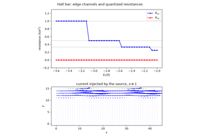
Buttiker’s Edge Channels: the Quantized Resistances of a Hall Bar
1989-1992 – Shot Noise and the Fano Factor#
The discreteness of charge makes a current fluctuate; for independent electrons the noise is Schottky’s Poissonian \(S = 2eI\). In a phase-coherent conductor the Pauli principle correlates them: Lesovik (1989) and Buttiker (1990) expressed the zero-temperature noise through the transmission eigenvalues, \(S = 2e|V|\frac{e^2}{h}\sum_nT_n(1-T_n)\), so that open channels are noiseless and a ballistic conductor has a Fano factor \(F = S/2eI = 0\). Beenakker and Buttiker (1992) found the universal \(F = 1/3\) of diffusive wires, from the bimodal distribution of their transmission eigenvalues, later measured by Steinbach, Martinis and Devoret (1996) and Henny et al. (1999).
Implementation: tbkit.transport.Transport.transmission_eigenvalues(),
shot_noise(),
fano_factor(), and
tbkit.transport.RecursiveTransport.fano_factor().
References: G. B. Lesovik, “Excess quantum noise in 2D ballistic point contacts,” JETP Lett. 49, 592 (1989); M. Buttiker, “Scattering theory of thermal and excess noise in open conductors,” Phys. Rev. Lett. 65, 2901 (1990); C. W. J. Beenakker and M. Buttiker, “Suppression of shot noise in metallic diffusive conductors,” Phys. Rev. B 46, 1889 (1992); A. H. Steinbach, J. M. Martinis, and M. H. Devoret, Phys. Rev. Lett. 76, 3806 (1996); M. Henny, S. Oberholzer, C. Strunk, and C. Schonenberger, Phys. Rev. B 59, 2871 (1999).
Example: examples/transport/plot_shot_noise_fano_factor.py confirms
\(F = 0\) for a ballistic chain, \(F > 0.98\) for a tunnel
junction, and \(F = 1/3\) within 0.03 for disordered square-lattice
wires (20 samples, recursive Green’s function), whose transmission
eigenvalues pile up near 0 and 1.
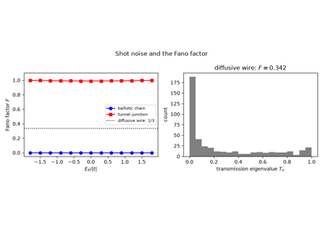
Shot Noise: the Fano Factor of Ballistic, Tunnel and Diffusive Conductors
2003/2004 – The Intrinsic Spin Hall Effect#
An electric field can drive a spin current transverse to it, with no charge current at all. S. Murakami, N. Nagaosa and S.-C. Zhang (2003), for holes in p-doped semiconductors, and J. Sinova and coworkers (2004), for a two-dimensional electron gas with Rashba coupling, showed that spin-orbit coupling alone produces it, as a property of the band structure – the spin counterpart of the intrinsic anomalous Hall effect (above). The spin current \(j^s_x = \{s_z, v_x\}/2\) replaces the charge current in the Kubo formula, and the spin Hall conductivity comes in the natural unit \(e/2\pi\). When \(s_z\) is conserved, the two spins decouple and it is quantized in a gap, \(\sigma^s_{xy} = \frac{e}{2\pi}(C_\uparrow - C_\downarrow)/2\) – the quantum spin Hall effect of the Kane-Mele model (2005, below). The effect was observed in 2004-2005 by Kerr microscopy of spins accumulated at the edges of semiconductor samples.
Implementation: tbkit.kspace.KSpace.spin_hall_conductivity(), for
spinful models (spin=True), at any Fermi level, with the spin current
along any axis.
References: S. Murakami, N. Nagaosa, and S.-C. Zhang, “Dissipationless Quantum Spin Current at Room Temperature,” Science 301, 1348-1351 (2003); J. Sinova, D. Culcer, Q. Niu, N. A. Sinitsyn, T. Jungwirth, and A. H. MacDonald, “Universal Intrinsic Spin Hall Effect,” Phys. Rev. Lett. 92, 126603 (2004); Y. K. Kato, R. C. Myers, A. C. Gossard, and D. D. Awschalom, “Observation of the Spin Hall Effect in Semiconductors,” Science 306, 1910-1913 (2004); J. Wunderlich, B. Kaestner, J. Sinova, and T. Jungwirth, “Experimental Observation of the Spin-Hall Effect in a Two-Dimensional Spin-Orbit Coupled Semiconductor System,” Phys. Rev. Lett. 94, 047204 (2005).
Example: examples/hall_effects/plot_intrinsic_spin_hall_effect.py
confirms the plateau \(e/2\pi = \frac{e}{2\pi}(C_\uparrow -
C_\downarrow)/2\) of the Kane-Mele model, cross-checked against the Chern
numbers and Hall conductivities of its two decoupled spin sectors, and
its departure from quantization under Rashba coupling, while the
\(\mathbb{Z}_2\) invariant stays 1.
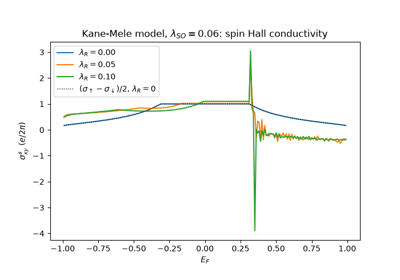
The Intrinsic Spin Hall Effect: Kane-Mele Plateau and Rashba Coupling
2005 – The Modern Theory of Orbital Magnetization#
The orbital magnetization of a crystal, the moment of its circulating currents \(\frac{1}{2}\int\mathbf{r}\times\mathbf{j}\), has the same problem as the polarization: the position operator is ill defined in a periodic solid. T. Thonhauser, D. Ceresoli, D. Vanderbilt and R. Resta, from Wannier functions, and D. Xiao, J. Shi and Q. Niu, from wavepackets, found the bulk formula in 2005:
One part is the self-rotation of the wavepackets, the other the edge currents of the Berry curvature. In a Chern insulator the latter grows linearly with \(\mu\) across the gap, with slope the Chern number: the Streda formula \(\partial M/\partial\mu = \partial n/\partial B = \sigma_{xy}\).
Implementation: tbkit.kspace.KSpace.orbital_magnetization(), at any
Fermi level and temperature, from the same Bloch derivatives as
hall_conductivity() and with its sign
convention.
References: T. Thonhauser, D. Ceresoli, D. Vanderbilt, and R. Resta, “Orbital Magnetization in Periodic Insulators,” Phys. Rev. Lett. 95, 137205 (2005); D. Xiao, J. Shi, and Q. Niu, “Berry Phase Correction to Electron Density of States in Solids,” Phys. Rev. Lett. 95, 137204 (2005); D. Ceresoli, T. Thonhauser, D. Vanderbilt, and R. Resta, “Orbital magnetization in crystalline solids: Multi-band insulators, Chern insulators, and metals,” Phys. Rev. B 74, 024408 (2006); P. Streda, “Theory of quantised Hall conductivity in two dimensions,” J. Phys. C 15, L717 (1982).
Example: examples/magnetic_field/plot_orbital_magnetization.py
sweeps \(\mu\) through the Haldane model: \(\partial M/\partial\mu\)
equals the Chern number in the gap to \(10^{-6}\) (1 in the
topological phase, 0 in the trivial one), and the electrons that a weak
field pulls into the bulk of a finite flake give the same slope to
\(10^{-4}\).
2006 – The Berry-Phase Anomalous Nernst Effect#
A temperature gradient across a ferromagnet drives a transverse current with no magnetic field. D. Xiao, Y. Yao, Z. Fang and Q. Niu showed that its intrinsic part comes from the Berry curvature, weighted by the entropy \(s = -f\ln f-(1-f)\ln(1-f)\) of each state:
The orbital magnetization of 2005 is what makes the thermal and the electrical driving forces differ. Only states near \(\mu\) carry entropy, so the effect vanishes in a gap, and the formula is equivalent to the Mott relation \(\alpha_{xy} = \frac{1}{eT}\int dE\,(E-\mu)(-\partial f/\partial E)\,\sigma_{xy}(E)\).
Implementation: tbkit.kspace.KSpace.anomalous_nernst_conductivity().
References: D. Xiao, Y. Yao, Z. Fang, and Q. Niu, “Berry-Phase Effect in Anomalous Thermoelectric Transport,” Phys. Rev. Lett. 97, 026603 (2006); D. Xiao, M.-C. Chang, and Q. Niu, “Berry phase effects on electronic properties,” Rev. Mod. Phys. 82, 1959 (2010).
Example: examples/hall_effects/plot_anomalous_nernst_effect.py
computes \(\alpha_{xy}(\mu)\) of the Haldane model at three
temperatures: it vanishes in the gap, agrees with the Mott integral of the
Hall conductivity to \(10^{-4}\), and approaches
\(\frac{\pi^2}{3}k_BT\,d\sigma_{xy}/d\mu\) at low temperature.
2008 – The Universal Optical Absorption of Graphene#
Nair et al. (2008) measured the transmission of white light through suspended graphene membranes: each layer absorbs \(\pi\alpha \approx 2.3\%\), with \(\alpha\) the fine-structure constant, independent of wavelength over the visible range. The number is set by the Kubo-Greenwood optical conductivity of massless Dirac electrons,
(spin and both valleys counted) for \(2|E_F| < \hbar\omega \ll t\), the value predicted by Ando, Zheng and Suzuki (2002) and by Gusynin, Sharapov and Carbotte (2006): the joint density of states of the Dirac cones grows as \(\omega\) and the weight of each transition falls as \(1/\omega\). A free-standing sheet absorbs \(\mathrm{Re}\,\sigma/\varepsilon_0c = \pi\alpha\). Doping blocks the transitions below \(2|E_F|\) (Pauli blocking), and the lattice brings a van Hove peak at \(\hbar\omega = 2|t|\).
Implementation: the new module tbkit.optics:
optical_conductivity() (the Kubo-Greenwood tensor
\(\sigma_{ab}(\omega)\) of a 2D KSpace, with
a broadening \(\eta\), interband and Drude parts, at any Fermi level
and temperature; its static Hall part equals
hall_conductivity()) and
joint_dos().
References: R. R. Nair, P. Blake, A. N. Grigorenko, K. S. Novoselov, T. J. Booth, T. Stauber, N. M. R. Peres, and A. K. Geim, “Fine Structure Constant Defines Visual Transparency of Graphene,” Science 320, 1308 (2008); T. Ando, Y. Zheng, and H. Suzuki, “Dynamical Conductivity and Zero-Mode Anomaly in Honeycomb Lattices,” J. Phys. Soc. Jpn. 71, 1318 (2002); V. P. Gusynin, S. G. Sharapov, and J. P. Carbotte, “Unusual Microwave Response of Dirac Quasiparticles in Graphene,” Phys. Rev. Lett. 96, 256802 (2006).
Example: examples/optics/plot_graphene_universal_absorption.py
confirms that the tight-binding optical conductivity of graphene tends to
\(e^2/4\hbar\) (within 0.5%) as \(\hbar\omega\to0\), so that one
layer absorbs \(\pi\alpha = 2.29\%\); that the joint density of
states grows as \(A_c\hbar\omega/4\pi\hbar^2v_F^2\); that the
absorption peaks at the van Hove energy \(2|t|\); and that doping to
\(E_F\) suppresses it below \(2|E_F|\).
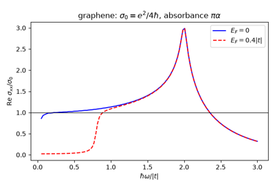
The Universal Absorption of Graphene: Opacity Defined by the Fine-Structure Constant
2011 – The Intrinsic Thermal Hall Effect and the Wiedemann-Franz Law#
The heat current of a Hall system includes a circulating part, a magnetization current, that does not flow through the sample. T. Qin, Q. Niu and J. Shi (2011) separated it in the Kubo formula and found the transport thermal Hall conductivity of the electrons as one more Berry-curvature integral,
At low temperature it obeys the Wiedemann-Franz law, \(\kappa_{xy} = \frac{\pi^2k_B^2}{3e^2}T\sigma_{xy}\); for a Chern insulator the thermal Hall conductance is quantized, as for the heat carried by its chiral edge states.
Implementation: tbkit.kspace.KSpace.thermal_hall_conductivity().
References: T. Qin, Q. Niu, and J. Shi, “Energy Magnetization and the Thermal Hall Effect,” Phys. Rev. Lett. 107, 236601 (2011); C. L. Kane and M. P. A. Fisher, “Quantized thermal transport in the fractional quantum Hall effect,” Phys. Rev. B 55, 15832 (1997).
Example: examples/hall_effects/plot_thermal_hall_effect.py finds
\(\kappa_{xy}/T = \pi^2/3\) (\(k_B^2/h\)) on the Chern plateau of the
Haldane model to \(10^{-6}\), agreement with the energy integral of
the Hall conductivity everywhere, and the departure from Wiedemann-Franz
when \(k_BT\) approaches the gap.
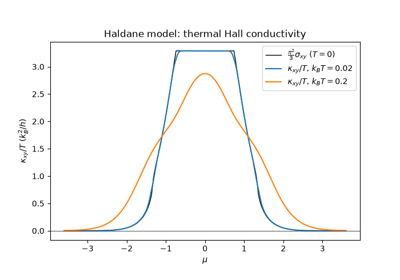
The Intrinsic Thermal Hall Effect and the Wiedemann-Franz Law
2014 – Leads as Translational Symmetries: Automatic Lead Attachment#
Every transport calculation since Caroli et al. (1971) splits the world into a finite device and semi-infinite leads that enter only through their surface Green’s functions. For decades, though, the coupling between the two was written by hand: which device sites the lead touches, and with which hopping matrix. That is easy for a straight strip and error-prone for anything else. C. W. Groth, M. Wimmer, A. R. Akhmerov and X. Waintal (2014) made the lead a translational symmetry of a tight-binding model in Kwant: a unit cell plus a lattice vector. The interface then follows from geometry. The device sites that the translation maps onto lead orbitals are copies of them, and the lead’s own hopping to the next cell couples them to it. Devices of any shape, with leads of any width at any position, are built in a few lines, and the scattering problem is assembled automatically.
Implementation: tbkit.transport.Transport.attach_lead() takes the
lead as a 1D KSpace (e.g. a strip from
ribbon()) whose orbitals sit at their positions in the
device’s coordinates. It finds the interface cell and builds the coupling
from lead_from_kspace(), for the S-matrix and Caroli
methods of Transport.
With extend=True it first adds the lead sites that a ragged device
lacks (a disc under a strip), filling in from the lead as Kwant does.
References: C. Caroli, R. Combescot, P. Nozieres, and D. Saint-James, “Direct calculation of the tunneling current,” J. Phys. C 4, 916-929 (1971); C. W. Groth, M. Wimmer, A. R. Akhmerov, and X. Waintal, “Kwant: a software package for quantum transport,” New J. Phys. 16, 063065 (2014).
Example: examples/transport/plot_automatic_lead_attachment.py
checks that, on a straight strip, the automatic leads give the same
transmission as hand-built ones to \(10^{-8}\). It then attaches two
6-site leads at different heights to a 20 x 30 cavity: the contacts are
found on the outermost columns under each lead’s footprint, the
transmission stays below the number of open modes of the narrow leads,
and the scattering matrix is unitary.
examples/transport/plot_completing_lead_interfaces.py removes sites
from the ends of a strip and checks that extend=True puts them back
with the strip’s Hamiltonian and transmission, then attaches zigzag leads
to a graphene disc.
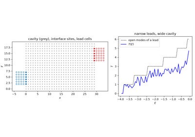
Automatic Lead Attachment: Narrow Contacts on a Wide Cavity
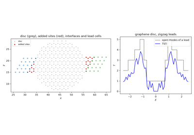
Completing Lead Interfaces: a Graphene Disc between Zigzag Leads
2015/2019 – The Nonlinear Hall Effect and the Berry Curvature Dipole#
In a time-reversal-symmetric crystal the Berry curvature integrates to zero over the occupied states: no linear Hall effect. Sodemann and Fu (2015) showed that its first moment, the Berry curvature dipole
survives in crystals of low enough symmetry (at most one mirror line in 2D), and drives a Hall current second order in the field, \(j_a = -\varepsilon_{adc}\frac{e^3\tau}{2\hbar^2(1+i\omega\tau)}D_{bd}E_bE_c\). For a tilted massive Dirac cone the dipole is, to first order in the tilt \(t\), \(D_x = -3tm(\mu^2-m^2)/8\pi\mu^4\). Ma et al. and Kang et al. (2019) observed the effect in bilayer and few-layer WTe2.
Implementation: tbkit.optics.berry_curvature_dipole() (a
Fermi-surface integral over the thermal window, with the Kubo-formula
Berry curvature of hall_conductivity()).
References: I. Sodemann and L. Fu, “Quantum Nonlinear Hall Effect Induced by Berry Curvature Dipole in Time-Reversal Invariant Materials,” Phys. Rev. Lett. 115, 216806 (2015); Q. Ma et al., “Observation of the nonlinear Hall effect under time-reversal-symmetric conditions,” Nature 565, 337 (2019); K. Kang, T. Li, E. Sohn, J. Shan, and K. F. Mak, “Nonlinear anomalous Hall effect in few-layer WTe2,” Nat. Mater. 18, 324 (2019).
Example: examples/optics/plot_nonlinear_hall_berry_curvature_dipole.py
confirms, on a lattice regularization of the tilted massive Dirac cone,
the Sodemann-Fu dipole within 1.5% across the conduction band (its
thermal average), \(D_y = 0\) by the mirror \(y\to-y\), a peak
near \(\mu = \sqrt2 m\), and a dipole odd in the tilt that vanishes
without it.
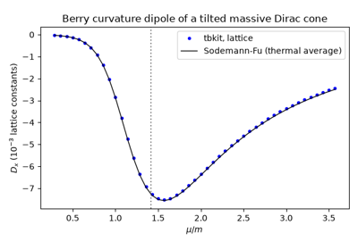
The Nonlinear Hall Effect: the Berry Curvature Dipole of a Tilted Dirac Cone